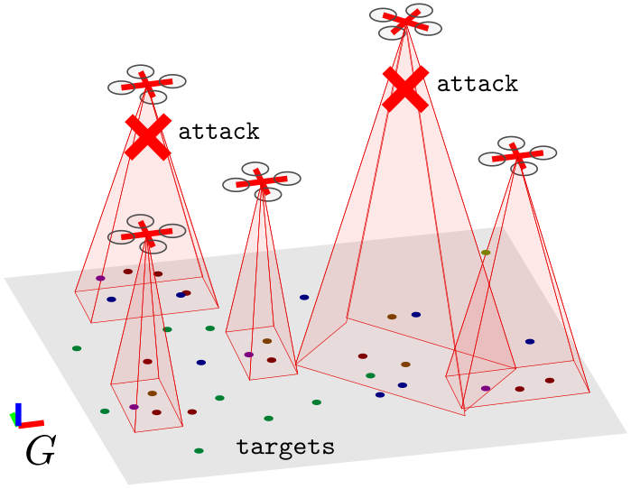
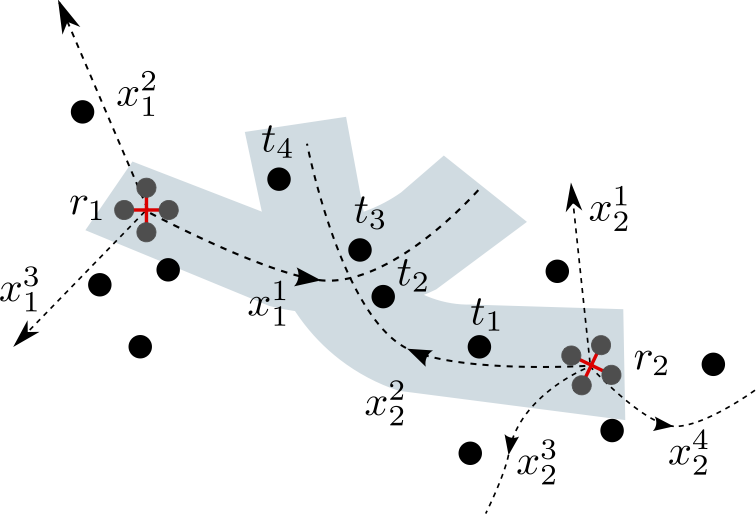
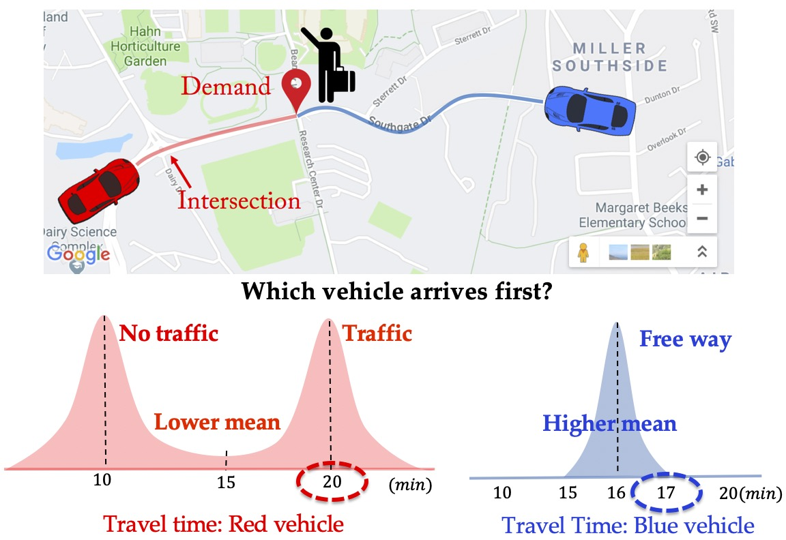
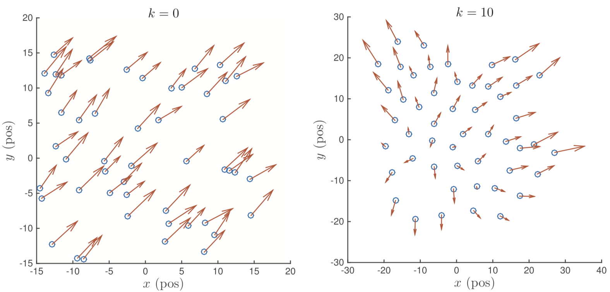
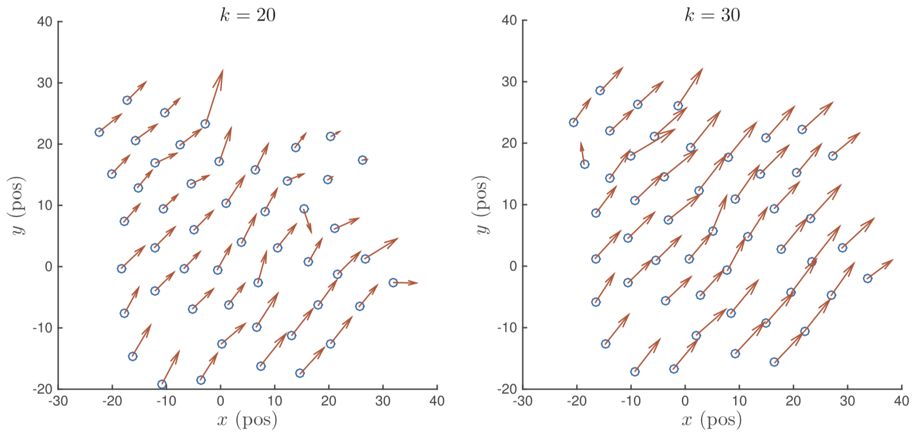
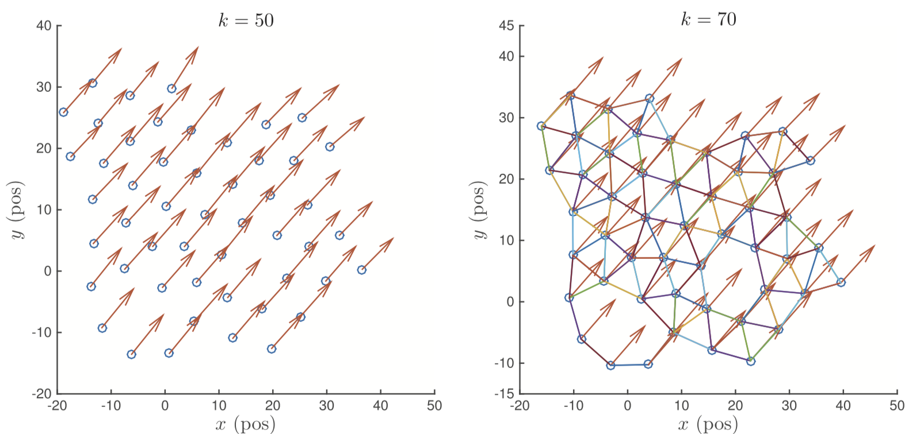
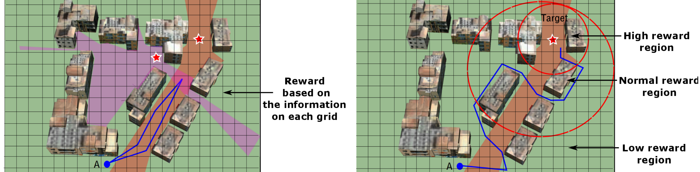
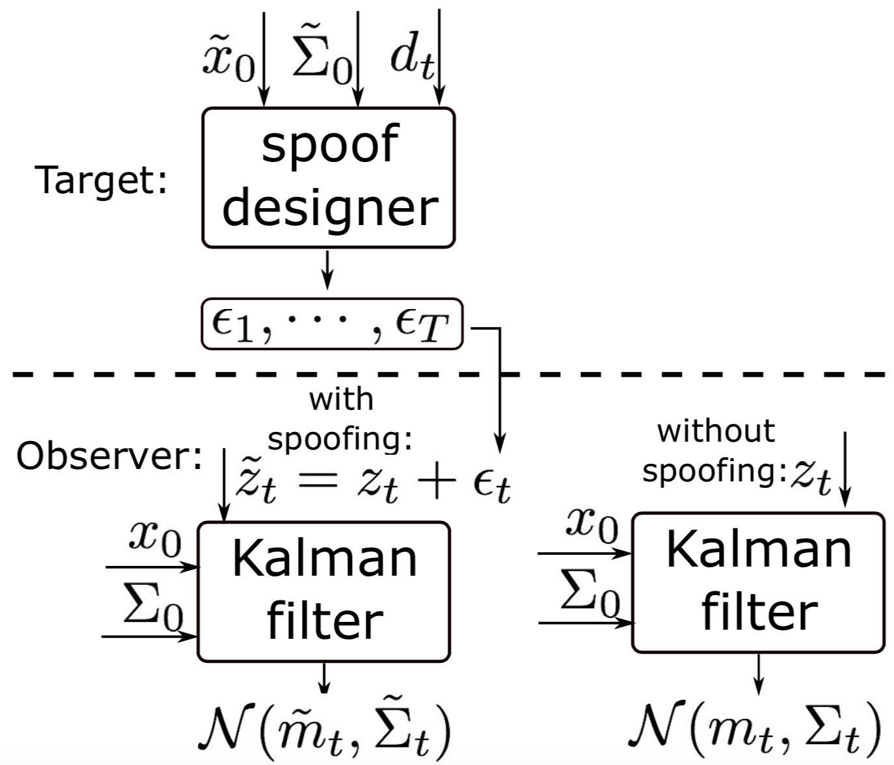
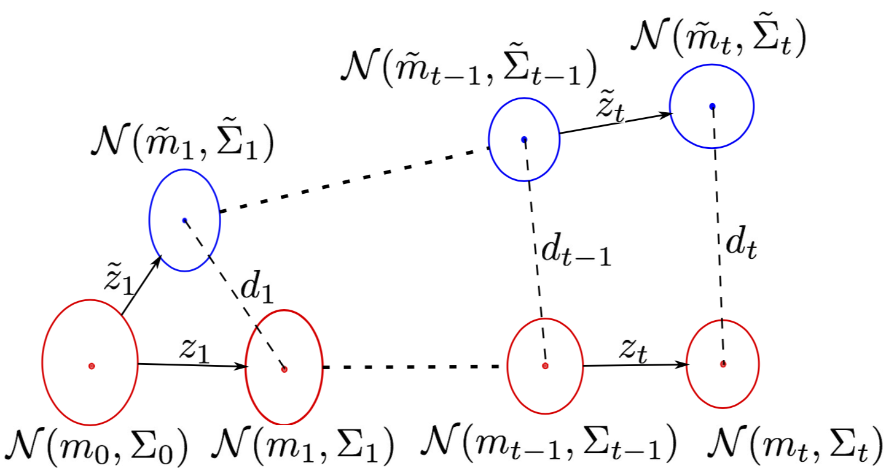

ResearchMy research focuses on enabling security, trustworthiness, and long-term autonomy in robotics and autonomous systems. When performing long-term tasks, robots need to deal with uncertain, changing environmental conditions. Robots may fail or if they are operating in adversarial environments, they may get attacked. To overcome these challenges, I devise efficient coordination algorithms with rigorous theoretical guarantees to make robots resilient to attacks and aware of the loss from uncertainty. My long-term goal is to investigate multi-robot security and trustworthy autonomy when they use data-driven machine learning techniques. I am especially interested in how multi-robot planning and coordination can help alleviate issues related to adversarial perturbations and uncertain extraction in the state-of-the-art deep learning models. Countering Attacks through Resilient CoordinationThe problem of target tracking with multiple robots consists of actively planning the motion of robots to track targets. A major challenge for practical deployments is to make the robots resilient to failures. In particular, robots may be attacked in adversarial scenarios, or their sensors may fail or get occluded. Here, we introduce planning algorithms for multi-target tracking that are resilient to such failures. In general, resilient target tracking is computationally hard. Contrary to the case where there are no failures, no scalable approximation algorithms are known for resilient target tracking when the targets are indistinguishable, or unknown in number, or with unknown motion model.
Managing Risk through Stochastic Submodular OptimizationWe study the problem of incorporating risk while making combinatorial decisions under uncertainty. We formulate a discrete submodular maximization problem for selecting a set using Conditional-Value-at-Risk (CVaR), a risk metric commonly used in financial analysis. While CVaR has recently been used in optimization of linear cost functions in robotics, we take the first stages towards extending this to discrete submodular optimization and provide several positive results. Specifically, we propose the Sequential Greedy Algorithm that provides an approximation guarantee on finding the maxima of the CVaR cost function under a matroidal constraint. The approximation guarantee shows that the solution produced by our algorithm is within a constant factor of the optimal and an additive term that depends on the optimal. Our analysis uses the curvature of the submodular set function, and proves that the algorithm runs in polynomial time. This formulates a number of combinatorial optimization problems that appear in robotics. We use two such problems, vehicle assignment under uncertainty for mobility-on-demand and sensor selection with failures for environmental monitoring, as case studies to demonstrate the efficacy of our formulation.
Reducing Communication by Self-Triggered ControlWe study the problem of reducing the amount of communication in decentralized target tracking. We focus on the scenario, where a team of robots is allowed to move on the boundary of the environment. Their goal is to seek a formation so as to best track a target moving in the interior of the environment. The robots are capable of measuring distances to the target. Decentralized control strategies have been proposed in the past, which guarantees that the robots asymptotically converge to the optimal formation. However, existing methods require that the robots exchange information with their neighbors at all time steps. Instead, we focus on decentralized strategies to reduce the amount of communication among robots. We propose a self-triggered communication strategy that decides when a particular robot should seek up-to-date information from its neighbors and when it is safe to operate with possibly outdated information. We prove that this strategy converges asymptotically to the desired formation when the target is stationary. For the case of a mobile target, we use a decentralized Kalman filter with covariance intersection to share the beliefs of neighboring robots. We evaluate all the approaches through simulations and a proof-of-concept experiment.
Reducing Communication by Forming Sensor SubsetsWe study two sensor assignment problems for multi-target tracking with the goal of improving the observability of the underlying estimator. We consider various measures of the observability matrix as the assignment value function. We first study the general version where the sensors must form teams to track individual targets. If the value function is monotonically increasing and submodular, then a greedy algorithm yields a 1/2–approximation. We then study a restricted version where exactly two sensors must be assigned to each target. We present a 1/3–approximation algorithm for this problem, which holds for arbitrary value functions (not necessarily submodular or monotone). In addition to approximation algorithms, we also present various properties of observability measures. We show that the inverse of the condition number of the observability matrix is neither monotone nor submodular, but present other measures that are. Specifically, we show that the trace and rank of the symmetric observability matrix are monotone and submodular and the log determinant of the symmetric observability matrix is monotone and submodular when the matrix is nonsingular. If the target’s motion model is not known, the inverse cannot be computed exactly. Instead, we present a lower bound for distance sensors. In addition to theoretical results, we evaluate our results empirically through simulations.
Team Formation by Distributed Model Predictive Control  This study presents a distributed model predictive control (MPC) strategy to achieve flocking of multi-agent systems. Based on the relative motion between each pair of neighboring agents, we introduce a neighbor screening protocol, by which each agent only focuses on its neighbors, which have the relative motion that violates the formation of flocks. Then, a truly distributed MPC flocking algorithm (Algorithm 1) is designed with consideration of neighbor screening mechanism. Specifically, at each sampling instant, each agent monitors the information in the networked system, finds its neighbors to form its subsystem, determines the screened neighbor set, and optimizes its plan by collecting the position states within the screened subsystem. And geometric properties of the optimal path are used to guarantee the formation of the flock without inter- agent collision. Finally, the performance and advantage of the proposed distributed MPC flocking strategy are vividly verified by the simulation results. [IJRNC'17] [IET'15] [CCC'15] Collaboration WorkTree Search Application in Robot-Target GameWe introduce and study the problem of planning a trajectory for an agent to carry out a scouting mission while avoiding being detected by an adversarial guard. This introduces a multi-objective version of classical visibility-based target search and pursuit-evasion problem. In our formulation, the agent receives a positive reward for increasing its visibility (by exploring new regions) and a negative penalty every time it is detected by the guard. The objective is to find a finite-horizon path for the agent that balances the trade off between maximizing visibility and minimizing detectability. We model this problem as a discrete, sequential, two-player, zero-sum game. We use two types of game tree search algorithms to solve this problem: minimax search tree and Monte-Carlo search tree. Both search trees can yield the optimal policy but may require possibly exponential computational time and space. We propose several pruning techniques to reduce the computational cost while still preserving optimality guarantees. Simulation results show that the proposed strategy prunes approximately three orders of magnitude nodes as compared to the brute-force strategy. We also find that the Monte-Carlo search tree saves approximately one order of computational time as compared to the minimax search tree. [ICRA'19] Spoofing Strategy in Robot-Target Game Abstract—We study the problem of designing spoofing signals to corrupt and mislead the output of a Kalman filter. Unlike existing works that focus on detection and filtering algorithms for the observer, we study the problem from the attacker’s point-of-view. In our model, the attacker can corrupt the measurements by adding spoofing signals. The attacker seeks to create a separation between the estimate of the Kalman filter with and without spoofing signals. We present a number of results on how to generate such spoofing signals, while minimizing the signal magnitude. The resulting algorithms are evaluated through simulations along with theoretical proofs. [ACC'18] [TAC Submitted] |